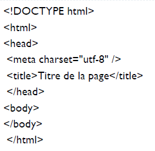
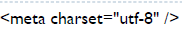
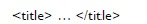
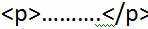
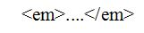
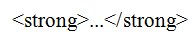
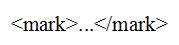
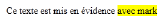

LES BASES DE HTML5
LES BASES DE HTML5- Structure de base d'une page HTML5
- L'en-tête head et le corps body
- L'encodage (charset)
- Le titre principal de la page
- Les paragraphes
- La mise en forme du texte
- Les titres
- Les listes
- Les liens
- Insertion d'une image
- Les balises structurantes de HTML5
- Les balises de type block et inline
- Les balises universelles
- Les tableaux *Diviser un tableau *Fusionner un tableau
- Les objets de formulaire
- Les formats audio
- Les formats vidéo

L'en-tête 'head' et le corps 'body':
Une page web est constituée de deux parties :
- L'entete "head":
cette section donne quelques informations générales sur la page comme son titre, l'encodage (pour la gestion des caractères spéciaux), etc.
C'est là que se trouve la partie principale de la page.Tout ce qui sera écrit ici sera affiché à l'écran.
L'encodage (charset):
Cette balise indique l'encodage utilisé dans votre fichier .html .Une seule cependant devrait être utilisée aujourd'hui autant
que possible : UTF-8.
Cette méthode d'encodage permet d'afficher sans aucun problème pratiquement tous les symboles de toutes les
langues.La balise meta charset="utf8" détermine comment les caractères spéciaux vont
s'afficher (accents, idéogrammes chinois et japonais, caractères
arabes, etc.), et elle s'ecrit dans la balise .
Le titre principal de la page
C'est le titre de la page.Toute page doit avoir un titre qui décrit ce qu'elle contient.
Les Paragraphes : 
Pour organiser son texte en paragraphes
La mise en forme du texte :
- La mise en valeur:
Mettre un peu en valeur
Mettre bien en valeur
- Marquer le texte:
C'est là que se trouve la partie principale de la page.Tout ce qui sera écrit ici sera affiché à l'écran.
La balise mark permet de faire ressortir visuellement une portion de texte.Donne le resultat suivant dans le navigateur :
